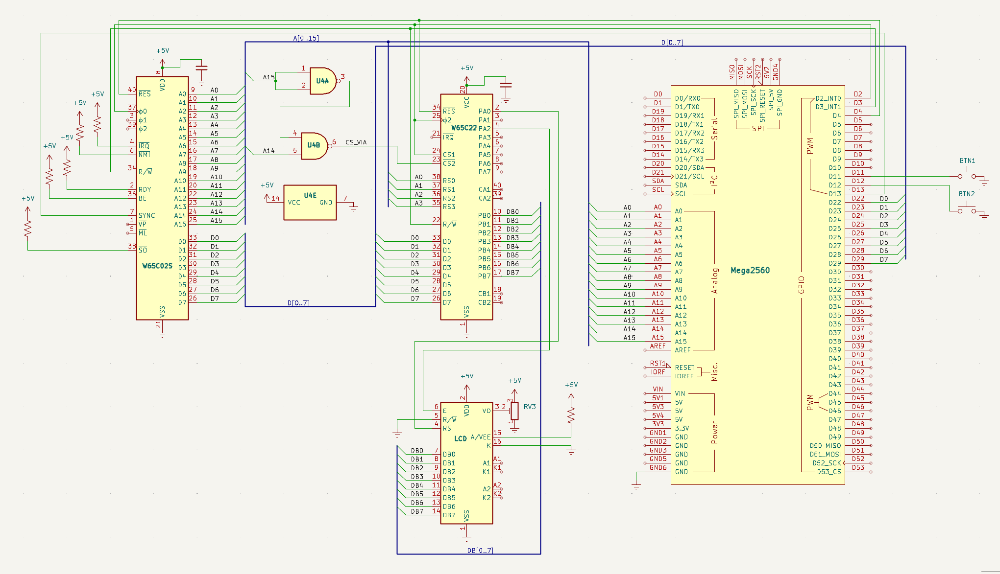

Steg 7 — VIA + LCD, styrd av 6502
Mål
I steg 6 styrde Arduino LCD-displayen direkt. Nu tar vi nästa stora kliv: vi kopplar in en W65C22 VIA (Versatile Interface Adapter) — en I/O-krets som ger 6502-processorn 20 egna pinnar att styra. VIAn sitter på CPU:ns adress- och databuss, precis som ett RAM-minne, men istället för att lagra data styr den fysiska pinnar.
En 74HC00 (två NAND-grindar) avkodar adressbussen så att VIA:n hamnar på adress $4000–$400F. U4A inverterar A15, U4B NAND:ar med A14 — resultat: VIA aktiveras när A14=1 och A15=0.
6502-programmet på $8000 gör följande:
- Sätter VIA:ns portar som utgångar
- Initierar LCD:n i 8-bitarsläge (8-bitars databuss, 2 rader, 5×8 font, display on, entry mode)
- Skriver två rader text genom att lägga ASCII-värden på port B och pulsa enable-signalen på port A — sedan clear display och loopa om från början
När allt fungerar har vi en dator där CPU:n själv styr I/O via minnesmappade adresser. Arduino är nu bara minnesemulator och klocka — all logik för LCD:n körs på 6502.
Nya komponenter
Plocka fram dessa ur komponentlådan. Inga överraskningar — bara det som tillkommer i detta steg.
| Antal | Komponent | Not |
|---|---|---|
| 1 | W65C22 VIA (DIP-40) | 2×8-bit I/O-portar (PA0–PA7, PB0–PB7), 4 registerväljare |
| 1 | 74HC00 (quad 2-input NAND) | Adressavkodning — genererar chip select-signaler |
| 1 | LCD 16×2 (parallell, t.ex. QC1602A) | Ansluts till VIA:ns PB0–PB7 + kontrollpinnar |
| 1 | 100 nF keramisk kondensator | Avkoppling vid VIA:ns VCC/GND |
Kopplingsschema
Här ser du hela kopplingen på en bild — alla komponenter och ledningar precis som de ska sitta på kopplingsdäcket.

W65C22 VIA — pinout
DIP-40-kapsel. Två 8-bitars I/O-portar (PA, PB), 4 kontrollpinnar (CA1–CB2), bussanslutning. Samma kapsel som CPU:n — var noga med orienteringen.
■ Port A/B ■ Kontroll/buss ■ Ström.
74HC00 — pinout
DIP-14-kapsel. Fyra 2-ingångars NAND-grindar. U4A+U4B används för VIA-avkodning, U4C+U4D är lediga (används för SRAM i steg 9).
■ U4A (NAND) ■ U4B (NAND) ■ U4C+U4D (lediga) ■ Ström.
Kopplingar — krets för krets
Här är varenda pinne på varenda krets — vad den heter, vart den går, och varför just den kopplingen behövs. Fyra kretsar, fyra tabeller.
W65C02S CPU
| Pin | Signal | Kopplas till | Varför |
|---|---|---|---|
| 8 | VDD | +5V | Strömmatning |
| 21 | VSS | GND | Systemjord |
| 37 | PHI2 | Arduino D2 | Klocka — Arduino genererar 20 Hz fyrkantsvåg |
| 34 | R/W | Arduino D3 + VIA pin 22 | Talar om för alla kretsar om CPU:n läser eller skriver |
| 40 | /RESET | Arduino D4 + VIA pin 34 | Kontrollerad reset — båda kretsarna startar samtidigt |
| 9–16, 17–20, 22–25 | A0–A15 | Arduino A0–A15 + VIA + 74HC00 | Adressbuss — alla kretsar delar samma 16 linjer |
| 26–33 | D0–D7 | Arduino D22–D29 + VIA D0–D7 | Databuss — 100Ω seriemotstånd på varje ledning |
| 2 | RDY | +5V via 10kΩ | Ready — HÖG = CPU kör, LÅG = paus |
| 4 | /IRQ | +5V via 10kΩ | Interrupt — avaktiverad (HÖG = inget avbrott) |
| 6 | /NMI | +5V via 10kΩ | Non-maskable interrupt — avaktiverad |
| 36 | BE | +5V via 10kΩ | Bus Enable — HÖG = bussarna aktiva. Utan denna är CPU:n bortkopplad! |
| 38 | /SO | +5V via 10kΩ | Set Overflow — avaktiverad |
W65C22 VIA
| Pin | Signal | Kopplas till | Varför |
|---|---|---|---|
| 20 | VDD | +5V | Strömmatning — glöm inte avkoppling 100nF till GND |
| 1 | VSS | GND | Systemjord |
| 25 | PHI2 | CPU PHI2 (pin 37) | Samma klocka som CPU — VIAn synkroniseras med bussen |
| 22 | R/W | CPU R/W (pin 34) | VIAn behöver veta om CPU:n läser eller skriver |
| 34 | /RESET | CPU /RESET (pin 40) | VIAns interna register nollställs vid reset |
| 26–33 | D0–D7 | CPU D0–D7 | Databuss — VIAn läser/skriver data här |
| 38–35 | RS0–RS3 | CPU A0–A3 | Registerväljare — vilket av VIAns 16 register som adresseras |
| 24 | CS1 | +5V | Chip Select 1 — aktiv HÖG. Permanent aktiverad |
| 23 | /CS2 | 74HC00 pin 6 (utgång) | Chip Select 2 — aktiv LÅG. 74HC00 drar denna LÅG när A15=0, A14=1 |
| 2 | PA0 | LCD RS (pin 4) | Register Select: LÅG = kommando, HÖG = data |
| 4 | PA2 | LCD E (pin 6) | Enable — fallande flank får LCD:n att läsa databussen |
| 10–17 | PB0–PB7 | LCD DB0–DB7 | 8-bitars parallell data till LCD:n |
74HC00 (adressavkodning)
| Pin | Grind | Kopplas till | Varför |
|---|---|---|---|
| 1, 2 | U4A in | CPU A15 | Båda ingångarna till A15 → ut = NOT A15 (inverterare) |
| 3 | U4A ut | U4B pin 4 | NOT A15 → grind B ingång 1 |
| 4 | U4B in | U4A pin 3 | NOT A15 |
| 5 | U4B in | CPU A14 | (NOT A15) NAND A14 → LÅG när A15=0, A14=1 |
| 6 | U4B ut | VIA /CS2 (pin 23) | LÅG vid $4000–$7FFF → VIA aktiverad |
| 14 | VCC | +5V | Strömmatning |
| 7 | GND | GND | Systemjord |
Logik: A15 inverteras av U4A. U4B gör (NOT A15) NAND A14 → LÅG när A15=0 och A14=1. VIAn aktiveras alltså vid adress $4000–$7FFF. CPU:ns A0–A3 går till VIAns RS0–RS3 vilket ger 16 register på $4000–$400F.
LCD 16×2 (parallell)
| Pin | Signal | Kopplas till | Varför |
|---|---|---|---|
| 1 | VSS | GND | Jord |
| 2 | VDD | +5V | Strömmatning |
| 3 | VO | Potentiometer (10kΩ) | Kontrast — mittbenet till VO, sidoben till +5V och GND |
| 4 | RS | VIA PA0 (pin 2) | Register Select — 0 = instruktion, 1 = teckendata |
| 5 | R/W | GND | Alltid skrivläge — vi läser aldrig från LCD:n |
| 6 | E | VIA PA2 (pin 4) | Enable — VIAn pulserar denna för att skicka data |
| 7–14 | DB0–DB7 | VIA PB0–PB7 | 8-bitars data — teckenkod eller kommando |
| 15 | A | +5V via 220Ω | Bakgrundsbelysning anod (+) |
| 16 | K | GND | Bakgrundsbelysning katod (−) |
Minneskarta — hela adressrymden ($0000–$FFFF)
6502-processorn har 16 adresslinjer = 64 KB adressrymd. Arduinon svarar på adresser där den har data, och tri-statar vid VIA-adresser så den fysiska kretsen kan svara.
0xEA = NOP — ofarlig fallback. CPU:n hoppar över oanvända adresser. Gul markering = Arduino rör inte dessa adresser, den fysiska VIA-kretsen svarar.
6502-program — två rader via VIA
Programmet ligger på $8000:
- sätter VIA-portar som utgångar,
- initierar LCD i 8-bitarsläge,
- skriver två rader text,
- clear display och loopa om och loopa om. För varje byte: lägg data på PORTB, pulsa E (PA2) på PORTA.
VIAns register (adress $4000–$4003)
| Adress | Register | Funktion |
|---|---|---|
| $4000 | ORB (PORTB) | LCD data (DB0–DB7) |
| $4001 | ORA (PORTA) | LCD kontroll (PA0=RS, PA2=E) |
| $4002 | DDRB | Data Direction B ($FF = alla utgångar) |
| $4003 | DDRA | Data Direction A |
Att skriva ett tecken till LCD
- Sätt data:
STA $4000— skicka ASCII-tecknet till PORTB (LCD DB0–DB7) - Sätt RS=1, E=1:
LDA #$05; STA $4001— PA0=RS=1 (data), PA2=E=1 - Sätt E=0:
LDA #$01; STA $4001— PA2=E=0 (fallande flank → LCD läser)
Programmet i maskinkod
Tabellen nedan visar hur Arduino bygger 6502-programmet i minnet, byte för byte. Första delen initierar VIA-portarna och LCD-displayen (8-bitarsläge, 2 rader, 5×8 font). Därefter skrivs en textrad i taget: cursor-positionering (→ rad 1), RS=1 (teckenläge), och så varje ASCII-tecken med en enable-puls. Efter sista tecknet kommer clear display och ett JMP-hopp tillbaka till början.
| Steg | Assembler | Bytes | Förklaring |
|---|---|---|---|
| VIA-init — sätt portar som utgångar | |||
| 1 | LDA #$FF | A9 FF | Alla pinnar = utgång |
| 2 | STA $4002 | 8D 02 40 | DDRB = $FF (LCD data) |
| 3 | STA $4003 | 8D 03 40 | DDRA = $FF (RS + E) |
| LCD-init — tvinga 8-bitarsläge ($30 × 3) | |||
| 4–6 | LDA #$30 STA $4000 LDA #$04 · STA $4001 LDA #$00 · STA $4001 | A9 30 8D 00 40 A9 04 8D 01 40 A9 00 8D 01 40 | $30 till PORTB, pulsa E (RS=0). Upprepas 3 gånger för att garantera 8-bit |
| Function Set: 8-bit, 2 rader, 5×8 font | |||
| 7 | LDA #$38 STA $4000 LDA #$04 · STA $4001 LDA #$00 · STA $4001 | A9 38 8D 00 40 A9 04 8D 01 40 A9 00 8D 01 40 | $38 = 8-bit, 2 rader, 5×8 — pulsa E |
| Display ON/OFF: display on, cursor off, blink off | |||
| 8 | LDA #$0C STA $4000 LDA #$04 · STA $4001 LDA #$00 · STA $4001 | A9 0C 8D 00 40 A9 04 8D 01 40 A9 00 8D 01 40 | Display ON, cursor OFF |
| Clear display + Entry mode: increment, no shift | |||
| 9 | LDA #$01 STA $4000 LDA #$04 · STA $4001 LDA #$00 · STA $4001 | A9 01 8D 00 40 A9 04 8D 01 40 A9 00 8D 01 40 | Clear display |
| 10 | LDA #$06 STA $4000 LDA #$04 · STA $4001 LDA #$00 · STA $4001 | A9 06 8D 00 40 A9 04 8D 01 40 A9 00 8D 01 40 | Entry mode: increment, no shift |
| Rad 1: "=== 6502 VIA LCD ===" (cursor till $00) | |||
| 11 | LDA #$80 · STA $4000 LDA #$04 · STA $4001 LDA #$00 · STA $4001 | A9 80 8D 00 40 … | Kommando $80 = sätt DDRAM-adress 0 (rad 1, pos 0) |
| 12 | LDA #$01 · STA $4001 | A9 01 8D 01 40 | RS=1 (data-läge) |
| 13 | För varje tecken: LDA #tecken · STA $4000 LDA #$05 · STA $4001 LDA #$01 · STA $4001 | A9 xx 8D 00 40 A9 05 8D 01 40 A9 01 8D 01 40 | Data + RS=1,E=1 → RS=1,E=0 (fallande flank). 19 tecken |
| Rad 2: "W65C02" (cursor $C0) | |||
| 14 | LDA #$C0 … | Cursor till rad 2 → "W65C02" | |
| Clear + loop | |||
| 17 | LDA #$01 · STA $4000 LDA #$04 · STA $4001 LDA #$00 · STA $4001 | A9 01 8D 00 40 … | Clear display |
| 18 | JMP hello_start | 4C xx xx | Hoppa tillbaka till rad 1 — oändlig loop |
Komplett Arduino-kod för steg 7 — programmet som körs på Arduino Mega 2560:
#include <Arduino.h>
// ==============================================================
// Steg 7 — VIA + LCD (LCD styrs av 6502 via W65C22 VIA)
// ==============================================================
// 6502-programmet initierar VIA + LCD och skriver 4 rader text.
// Arduino är endast minnesemulator + klocka — all I/O via VIA.
#define PHI2 2 // CPU pin 37
#define RESB 4 // CPU pin 40
#define CLOCK_HZ 500 // Klockfrekvens i Hz
#define CLOCK_DELAY (1000 / (CLOCK_HZ * 2)) // ms per klockfas
#define RWB 3 // CPU pin 34
#define SYNC 13 // CPU pin 7
#define BTN_CLK 11 // Knapp: en klockcykel per tryck
#define BTN_INSTR 12 // Knapp: kör till nästa instruktion
uint8_t ram[1024]; // $0000–$03FF (stack + zero page)
uint8_t program[2048]; // $8000–$87FF (6502-program, Arduino svarar)
uint8_t vectors[6]; // $FFFA–$FFFF
#define VIA_BASE 0x4000
// --- is_via() — är detta en VIA-adress? ---
// VIA sitter på $4000–$400F. Arduino ska INTE svara här —
// den fysiska W65C22-kretsen hanterar dessa adresser själv.
bool is_via(uint16_t addr) {
return (addr >= VIA_BASE && addr < VIA_BASE + 16);
}
// --- read_mem() — slå upp ett minnesvärde ---
// Returnerar 0 för VIA-adresser (Arduino tri-state, VIA svarar).
// Returnerar NOP ($EA) som fallback för oanvända adresser.
uint8_t read_mem(uint16_t addr) {
if (is_via(addr)) return 0;
if (addr >= 0xFFFA && addr <= 0xFFFF)
return vectors[addr - 0xFFFA];
if (addr >= 0x8000 && addr < 0x8000 + sizeof(program))
return program[addr - 0x8000];
if (addr < sizeof(ram)) return ram[addr];
return 0xEA;
}
// --- write_mem() — spara ett värde i minnet ---
// Ignorera VIA-adresser — den fysiska kretsen tar emot skrivningen.
void write_mem(uint16_t addr, uint8_t val) {
if (is_via(addr)) return;
if (addr >= 0xFFFA && addr <= 0xFFFF)
{ vectors[addr - 0xFFFA] = val; return; }
if (addr >= 0x8000 && addr < 0x8000 + sizeof(program))
{ program[addr - 0x8000] = val; return; }
if (addr < sizeof(ram)) ram[addr] = val;
}
void pulse(); // Forward declaration
// --- pulse() — en klockcykel med minnesemulering + VIA-pass-through ---
// Kritiskt: DDRA = 0x00 direkt när PHI2 går låg, INNAN delay().
// Arduino svarar ENDAST på adresser utanför VIA-området.
void pulse() {
digitalWrite(PHI2, LOW);
// Släpp databussen EFTER klockfall — håll kvar data under CPU:ns hold time (~10ns)
DDRA = 0x00;
delay(CLOCK_DELAY);
uint8_t kl = PINF; // CPU A0–A7 (via Arduino A0–A7)
uint8_t kh = PINK; // CPU A8–A15 (via Arduino A8–A15)
uint16_t a = (kl << 0) | (kh << 8);
bool rw = digitalRead(RWB);
if (rw && !is_via(a)) {
DDRA = 0xFF;
PORTA = read_mem(a);
}
// -- Fas 2: PHI2 hög --
digitalWrite(PHI2, HIGH);
if (!rw && !is_via(a)) write_mem(a, PINA);
// === Debug: råa portvärden + fasdetektion ===
static uint8_t phase = 0;
static uint16_t last_a = 0xFFFF;
uint8_t new_phase = phase;
// Fasövergångar
if (a == 0xFFFC && last_a != 0xFFFC) new_phase = 1; // Reset-vektor
else if (a >= 0x8000 && a <= 0x800F && rw && phase <= 1) new_phase = 2; // Programstart
else if (a == 0x4002 && !rw && phase <= 2) new_phase = 3; // VIA init
else if (a == 0x4000 && !rw && phase == 3) new_phase = 4; // LCD init
else if (rw && a >= 0x8000 && phase == 5) new_phase = 6; // Hello JMP loop
if (new_phase != phase) {
phase = new_phase;
Serial.println();
switch (phase) {
case 1: Serial.println("══════ RESET-SEKVENS — CPU lämnar reset ══════"); break;
case 2: Serial.println("══════ PROGRAMSTART $8000 — LDA #$FF ══════"); break;
case 3: Serial.println("══════ VIA INIT — Sätter portar som utgångar ══════"); break;
case 4: Serial.println("══════ LCD INIT — Skickar init-kommandon ══════"); break;
case 5: Serial.println("══════ HELLO UTSKRIFT — Skriver 'Hello 6502!' ══════"); break;
case 6: Serial.println("══════ KLAR — JMP loop (skriver om) ══════"); break;
}
}
last_a = a;
Serial.print(rw ? "R" : "W");
Serial.print(" $");
Serial.print(a, HEX);
Serial.print(" [PINK=0x"); Serial.print(PINK, HEX);
Serial.print(" PINF=0x"); Serial.print(PINF, HEX);
Serial.print(" RWB="); Serial.print(rw ? "H" : "L");
if (a >= 0x4000 && !rw) { Serial.print(" ← VIA: "); Serial.print(PINA, HEX); }
else if (a >= 0x8000 && rw) Serial.print(" ← OPCODE");
else if (a == 0xFFFC) Serial.print(" ← RESET-VEKTOR LÅG");
else if (a == 0xFFFD) Serial.print(" ← RESET-VEKTOR HÖG");
else if (a < 0x200) Serial.print(" ← STACK/ZP");
Serial.println();
}
// --- setup() — ladda 6502-program och starta CPU ---
void setup() {
// CPU i reset från start — avgörande!
pinMode(RESB, OUTPUT); digitalWrite(RESB, LOW);
pinMode(PHI2, OUTPUT); digitalWrite(PHI2, LOW);
pinMode(SYNC, INPUT);
pinMode(BTN_CLK, INPUT_PULLUP);
pinMode(BTN_INSTR, INPUT_PULLUP);
pinMode(RWB, INPUT);
pinMode(8, INPUT); // Övervaka E (VIA PA2 → LCD pin 6)
pinMode(9, INPUT); // Övervaka RS (VIA PA0 → LCD pin 4)
Serial.begin(115200);
DDRK = 0x00; // A8–A15 in
DDRF = 0x00; // A0–A7 in
DDRA = 0x00;
// Reset-vektor → $8000
write_mem(0xFFFC, 0x00);
write_mem(0xFFFD, 0x80);
// Sekventiell programladdning — next räknas upp automatiskt
uint16_t next = 0x8000;
// === Steg 1: Sätt VIA-portar som utgångar ===
// LDA #$FF
write_mem(next++, 0xA9); write_mem(next++, 0xFF);
// STA $4002 (DDRB)
write_mem(next++, 0x8D); write_mem(next++, 0x02); write_mem(next++, 0x40);
// STA $4003 (DDRA)
write_mem(next++, 0x8D); write_mem(next++, 0x03); write_mem(next++, 0x40);
// === Steg 3: Skicka $30 tre gånger (tvinga 8-bit mode) ===
for (int i = 0; i < 3; i++) {
write_mem(next++, 0xA9); write_mem(next++, 0x30); // LDA #$30
write_mem(next++, 0x8D); write_mem(next++, 0x00); write_mem(next++, 0x40); // STA $4000
write_mem(next++, 0xA9); write_mem(next++, 0x04); // LDA #$04 (RS=0, E=1)
write_mem(next++, 0x8D); write_mem(next++, 0x01); write_mem(next++, 0x40); // STA $4001
write_mem(next++, 0xA9); write_mem(next++, 0x00); // LDA #$00 (RS=0, E=0)
write_mem(next++, 0x8D); write_mem(next++, 0x01); write_mem(next++, 0x40); // STA $4001
}
// === Steg 4: Function Set: 8-bit, 2 rader, 5x8 font ===
write_mem(next++, 0xA9); write_mem(next++, 0x38); // LDA #$38
write_mem(next++, 0x8D); write_mem(next++, 0x00); write_mem(next++, 0x40); // STA $4000
write_mem(next++, 0xA9); write_mem(next++, 0x04); // LDA #$04 (RS=0, E=1)
write_mem(next++, 0x8D); write_mem(next++, 0x01); write_mem(next++, 0x40); // STA $4001
write_mem(next++, 0xA9); write_mem(next++, 0x00); // LDA #$00 (RS=0, E=0)
write_mem(next++, 0x8D); write_mem(next++, 0x01); write_mem(next++, 0x40); // STA $4001
// === Steg 5: Display ON, cursor OFF, blink OFF ===
write_mem(next++, 0xA9); write_mem(next++, 0x0C); // LDA #$0C
write_mem(next++, 0x8D); write_mem(next++, 0x00); write_mem(next++, 0x40); // STA $4000
write_mem(next++, 0xA9); write_mem(next++, 0x04); // LDA #$04
write_mem(next++, 0x8D); write_mem(next++, 0x01); write_mem(next++, 0x40); // STA $4001
write_mem(next++, 0xA9); write_mem(next++, 0x00); // LDA #$00
write_mem(next++, 0x8D); write_mem(next++, 0x01); write_mem(next++, 0x40); // STA $4001
// === Steg 6: Clear Display ===
write_mem(next++, 0xA9); write_mem(next++, 0x01); // LDA #$01
write_mem(next++, 0x8D); write_mem(next++, 0x00); write_mem(next++, 0x40); // STA $4000
write_mem(next++, 0xA9); write_mem(next++, 0x04); // LDA #$04
write_mem(next++, 0x8D); write_mem(next++, 0x01); write_mem(next++, 0x40); // STA $4001
write_mem(next++, 0xA9); write_mem(next++, 0x00); // LDA #$00
write_mem(next++, 0x8D); write_mem(next++, 0x01); write_mem(next++, 0x40); // STA $4001
// === Steg 7: Entry Mode: increment, no shift ===
write_mem(next++, 0xA9); write_mem(next++, 0x06); // LDA #$06
write_mem(next++, 0x8D); write_mem(next++, 0x00); write_mem(next++, 0x40); // STA $4000
write_mem(next++, 0xA9); write_mem(next++, 0x04); // LDA #$04
write_mem(next++, 0x8D); write_mem(next++, 0x01); write_mem(next++, 0x40); // STA $4001
write_mem(next++, 0xA9); write_mem(next++, 0x00); // LDA #$00
write_mem(next++, 0x8D); write_mem(next++, 0x01); write_mem(next++, 0x40); // STA $4001
// === Hello-rutin: 4 rader → clear → loop ===
uint16_t hello_start = next;
// -- Hjälpfunktion: skicka LCD-kommando --
// Vi bygger inline: LDA #cmd, STA $4000, LDA #$04, STA $4001, LDA #$00, STA $4001
// (RS=0 för kommando, E-puls)
// Rad 1: "=== 6502 VIA LCD ==="
// Först: sätt cursor till rad 1 (DDRAM $00): kommando $80
write_mem(next++, 0xA9); write_mem(next++, 0x80); // LDA #$80
write_mem(next++, 0x8D); write_mem(next++, 0x00); write_mem(next++, 0x40); // STA $4000
write_mem(next++, 0xA9); write_mem(next++, 0x04); // LDA #$04 (RS=0, E=1)
write_mem(next++, 0x8D); write_mem(next++, 0x01); write_mem(next++, 0x40); // STA $4001
write_mem(next++, 0xA9); write_mem(next++, 0x00); // LDA #$00 (E=0)
write_mem(next++, 0x8D); write_mem(next++, 0x01); write_mem(next++, 0x40); // STA $4001
// RS=1 (data-läge)
write_mem(next++, 0xA9); write_mem(next++, 0x01); // LDA #$01
write_mem(next++, 0x8D); write_mem(next++, 0x01); write_mem(next++, 0x40); // STA $4001
const char* line1 = "W65C02 VIA LCD";
for (const char* p = line1; *p; p++) {
write_mem(next++, 0xA9); write_mem(next++, *p);
write_mem(next++, 0x8D); write_mem(next++, 0x00); write_mem(next++, 0x40);
write_mem(next++, 0xA9); write_mem(next++, 0x05);
write_mem(next++, 0x8D); write_mem(next++, 0x01); write_mem(next++, 0x40);
write_mem(next++, 0xA9); write_mem(next++, 0x01);
write_mem(next++, 0x8D); write_mem(next++, 0x01); write_mem(next++, 0x40);
}
// Rad 2: cursor till $40 (kommando $C0)
write_mem(next++, 0xA9); write_mem(next++, 0xC0); // LDA #$C0
write_mem(next++, 0x8D); write_mem(next++, 0x00); write_mem(next++, 0x40);
write_mem(next++, 0xA9); write_mem(next++, 0x04);
write_mem(next++, 0x8D); write_mem(next++, 0x01); write_mem(next++, 0x40);
write_mem(next++, 0xA9); write_mem(next++, 0x00);
write_mem(next++, 0x8D); write_mem(next++, 0x01); write_mem(next++, 0x40);
write_mem(next++, 0xA9); write_mem(next++, 0x01); // RS=1
write_mem(next++, 0x8D); write_mem(next++, 0x01); write_mem(next++, 0x40);
// Rad 2: smutje.se W65C02
const char* line2 = "smutje.se W65C02";
for (const char* p = line2; *p; p++) {
write_mem(next++, 0xA9); write_mem(next++, *p);
write_mem(next++, 0x8D); write_mem(next++, 0x00); write_mem(next++, 0x40);
write_mem(next++, 0xA9); write_mem(next++, 0x05);
write_mem(next++, 0x8D); write_mem(next++, 0x01); write_mem(next++, 0x40);
write_mem(next++, 0xA9); write_mem(next++, 0x01);
write_mem(next++, 0x8D); write_mem(next++, 0x01); write_mem(next++, 0x40);
}
// Clear display (kommando $01)
write_mem(next++, 0xA9); write_mem(next++, 0x01); // LDA #$01
write_mem(next++, 0x8D); write_mem(next++, 0x00); write_mem(next++, 0x40);
write_mem(next++, 0xA9); write_mem(next++, 0x04);
write_mem(next++, 0x8D); write_mem(next++, 0x01); write_mem(next++, 0x40);
write_mem(next++, 0xA9); write_mem(next++, 0x00);
write_mem(next++, 0x8D); write_mem(next++, 0x01); write_mem(next++, 0x40);
// Vänta lite efter clear (clear tar ~1.6ms) — skicka några NOP/read
// Vi gör bara JMP tillbaka till start istället:
write_mem(next++, 0x4C); // JMP
write_mem(next++, hello_start & 0xFF); // låg byte
write_mem(next++, (hello_start >> 8) & 0xFF); // hög byte
// Reset-sekvens
for (int i = 0; i < 5; i++) pulse();
digitalWrite(RESB, HIGH);
// ~2000 cykler för det stora 4-radersprogrammet (ca 40 sek vid 20 Hz)
for (int i = 0; i < 2000; i++) pulse();
}
void loop() {
// Kör kontinuerligt så vi ser JMP-loopen
pulse();
}
Testning och felsökning
- Ladda upp koden och öppna serieövervakaren (115200 baud)
- Verifiera att CPU:n startar: du ska se
R $FFFC,R $FFFD,R $8000… - Leta efter VIA-adresser:
W $4002,W $4003betyder att CPU:n konfigurerar VIA:ns portar - LCD:n ska visa två rader text, sedan clear och loopa om — tar ~2000 klockcykler (ca 40 sek vid 20 Hz)
Om det inte fungerar
1. CPU:n startar inte? Ser du W $0 eller W $1? Kontrollera BE (HÖG), PHI2 (pulser), RESB (HÖG efter reset).
2. Ser inga $4xxx-adresser? Dubbelkolla 74HC00-kopplingen och att VIA:ns bussanslutningar sitter rätt.
3. Mät med multimeter:
- PHI2 (CPU pin 37): ~2.5V medel (20 Hz fyrkant)
- BE (CPU pin 36): >4.8V
- VIA /CS2 (pin 23): ska gå LÅG vid $4000–$7FFF
- VIA VDD (pin 20): >4.8V
- 74HC00 VCC (pin 14): >4.8V
4. Arduino som logikanalysator: koppla D8 till en mätpunkt och lägg till i pulse():
Serial.print(" D8="); Serial.print(digitalRead(8));5. Vanliga missar:
- CS1 (VIA pin 24) flytande — måste ha +5V
- 74HC00 VCC/GND glömt
- Arduino driver databussen vid VIA-adresser — koden måste sätta DDRA=0x00
- Spänningsfall — mät VDD vid CPU, VIA och 74HC00 (alla >4.8V)